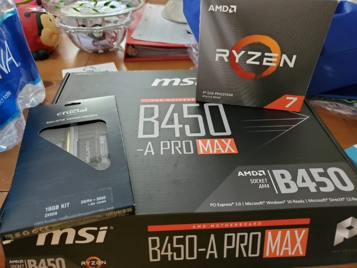
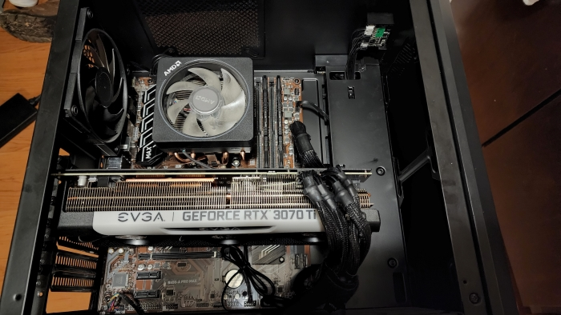
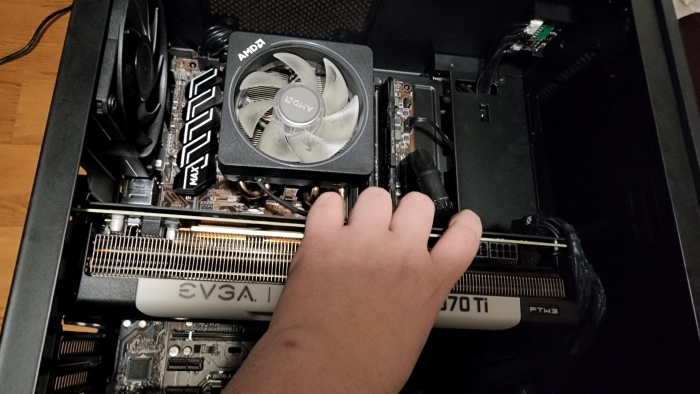
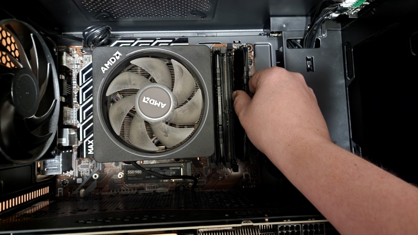
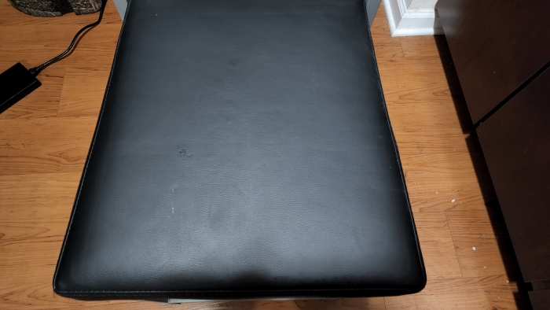
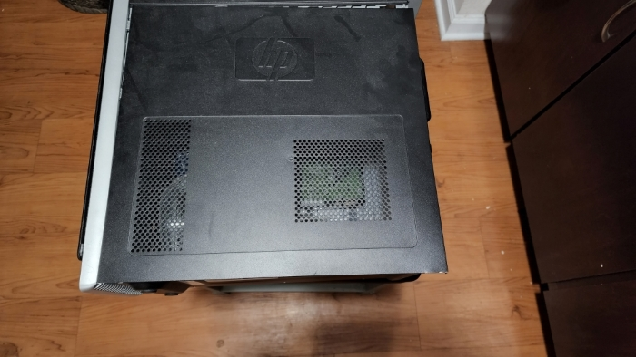
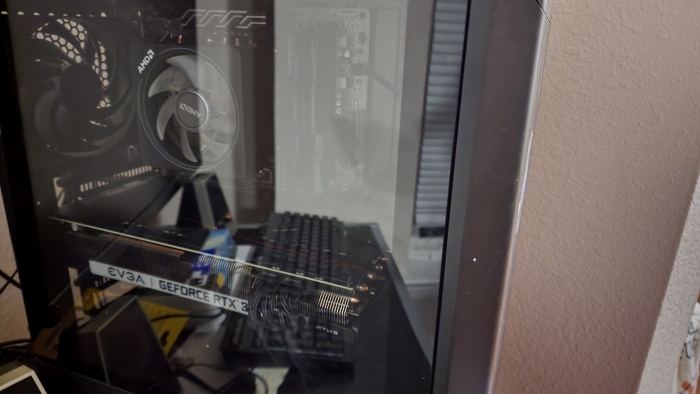
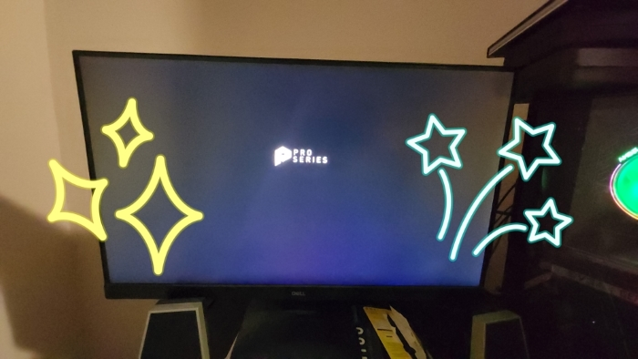

About Me
My name is Zachary Price and I love to build computers the picture below is my build currently I have also built for my father and my grandparents. I built my first build in 2017 with a Intel i3 7100 and Gigabyte rx 460. My current build is a Ryzen 3700x and a EVGA RTX 3070TI.

Home
This is my hobby, building pcs here is how you can build your own. The main componets that you need is a motherboard, ram, cpu, power supply, and a graphics card if your cpu is a not a G skew Ryzen, you then can add any astetics that you may want such as rgb.
 How to bulid a pc
building a pc is simple their are many video guides on youtube by creators like LinusTechTips and JayzTwoCents. with modern parts it has been made simpler to build a pc where its like legos, especially if you buy an NZXT case with their standard front panel connectors. selecting the parts will be the most challenging part will be selecting parts but a helpfull tip is to use pcpartpicker to select the parts and it will tell you if the parts will work with each other
 Where to build
the best place to build is on a table that is not on carpet, to avoid static shock. People also suggest a grounding wristband but it is not always necessiary. Here is an example
 Why to build
The reason to buld your own pc is that you get to pick exactly what goes in it and how powerfull it is based on your budget. It can also be cheaper by buying used parts now that prices seem to be coming down, and it can give you the sense of achevment once the pc POST's. dont be scared if it takes a while to post once you turn it on as it may need to train memory it can take a few minutes to do this.
 